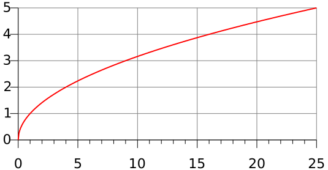

RSS Feed
RSS Feed
Olympus DAO: An Economic Analysis
28 Feb 2022In my previous post — Olympus DAO from Primary Sources — we looked at exactly how OlympusDAO worked by digging into the smart contracts implementing it.
If you're jumping aboard this wagon, OlympusDAO is a decentralized app that turned quite a few heads due to the high promised APY, sharp price increase, and even sharper market cap increase.
Last time we looked at what the protocol did mechanistically (the findings will be recapped shortly). This time, we're looking at the consequence of the mechanisms for price, market cap, valuation, etc.
(It goes without saying that all of this is a fun educational analysis, and none of it is financial advice.)
The Bottom Line
I won't tease you further, here are the basic conclusions (presented out-of-order compared to the main text):
OHM (Olympus' token) has extremely high programmed inflation, but the staking product protects stakers against dilution.
At first look, it looks like staking also increases ownership over the total OHM supply when less than 100% of the supply is staked. In practice, it seems likely that most of the unstaked supply is made out of liquidity pool reserves owned by the protocol, meaning any increase in ownership is compensated by a dilution of the treasury (which underpins the value of owning the protocol!).
As a result staking is very much useless (economically neutral) as a mechanic, besides as a way to drive narrative and hype (high APYs!!).
As a first approximation, the treasury value offers a floor price on OHM's market cap — however this notion is thwarted by the fact that the OHM treasury contain OHM tokens (in the liquidity pools underlying the LP tokens). So when the price of OHM goes down, so the does the market value of the treasury.
In reality, there exists a price
> 1$such that the OHM market cap is equal to the market value of the treasury. Let's call the treasury value at that price the sustainable value.The sustainable treasury value must exist becau
The treasury value decreases slower than the market cap (notably because it contains stablecoins), so if the price keeps dipping, at some point the market cap "catches up" with the treasury value.
Part of the treasury is denominated in stablecoins, and these were collected when the OHM price was much higher than 1$. Meaning the equilibrium (sustainable) price is
> 1$.
In any case, the "backing per OHM" advertised by Olympus and the "treasury value" advertised by Wonderland are misleading since these value go down when the price goes down.
If the high inflation (rebase) rate persists, OHM will eventually go down to 1$, at which point a backstop in the inflation logic prevents further inflation until the price increases again.
Bond sales are the real interesting mechanism. They are a programmed way to raise funds for the treasury via further inflation. Wether this is inflation is dilutive to OHM stakers depends on whether the bond sales discount is lower or higher than the current price premium (see below).
When discussing Olympus valuation, it will be much more useful to use gOHM (indexed OHM — i.e. wrapped staked OHMs that do not dilute due to rebases) as a reference.
A useful model to value Olympus' market cap is to assume it should trade at a premium to the sustainable treasury value. This premium is justified by the fact that gOHM is essentially (a) a voucher for ownership of part of the treasury + (b) a call option on the gOHM price. The call option part is the premium.
The premium essentially depends on the sustainable backing per gOHM + the expected future premium.
The backing could increase for multiple reasons: yield farming with the treasury, VC-like investments with the treasury, or new products that increase the treasury, like Olympus Pro.
The backing also naturally increases through bond sales, as long as the bond sales discount is lower than the current premium.
Because the current premium depends on the expected future premium, the process is reflexive (it's a "Keynesian beauty context" or "a fixed-point calculation"). Each participant must try to guess how every other participant will value OHM.
Ignoring this issue for now, what price should you be willing to purchase OHM at. i.e. what premium are you willing to accept?
I propose the formula:
maximum_purchase_price = expected_sustainable_treasury_backing * (1 + expected_premium) - current_price * (risk_free_rate + risk_premium)(We already discussed all terms except the risk-free rate and the risk premium.)The risk-free rate is the return rate you could get without taking risk. No such thing as "risk-free" in crypto, but you could set that to the lending rate on Aave or Compound for instance. (Or just use the US bonds rate!)
The risk premium is the return rate you demand to be compensated for the risk that you are taking.
See the article for an example of thow this computation can be borne out in practice.
I also briefly discuss the relationship between the premium and the treasury size. Mostly, as the treasury grows, it's natural to expect that the premium should decrease: the team doesn't scale linearly with capital, and investment opportunities become scarcer.
It's important to note that the Olympus team is aware of some of these issues. See this whitepaper by Zeus and Indigo, which proposes "an evolution from the existing staking-centric model in favor of a bond-centric model". The goal are to truly lock away part of the supply (which staking doesn't do) and enable selling "internal" OHM-OHM bonds (just like US treasury bonds but with OHM instead of USD) at high volume without adversely affecting the OHM price.
The team also came up with the Olympus12 roadmap, which outlines a strong (imho) and extremely interesting action plan for bolstering the economics of OlympusDAO going forward. I do think the success of the plan hinges on whether they will manage to convince projects and people to effectively treat OHM (more like gOHM) as a token to put on the balance sheet / in their long-term portfolio, and not just speculation & arbitrage. With the right mix of incentives and interesting use cases, they might be able to.
Table of Contents
- The Bottom Line
- How Olympus Works: Recap
- Example
- OlympusDAO Valuation
- Olympus in the Long Run
- On the Uselessness of Staking
- On the Usefulness of Bonding
- Coda
How Olympus Works: Recap
If you missed the previous article, here is a copy of my (fairly detailed) summary of OHM's mechanisms. This should be all you need to follow along!
The total supply of $OHM inflates at the staking reward rate every ~8 hours. This inflation is redistributed among stakers. The inflation distribution event that happens every 8 hours is called a rebase.
The staking reward rate is set by the OlympusDAO policy team. For the longest time, this reward rate was 0.35%. It is currently 0.2%, on its way down to a target of 0.16%. At 0.35%, this implies an inflation of 4487%. This is also the minimum staking APY in OHM (if 100% of the OHM is staked, otherwise it will be higher). At 0.16%, this implies a 475% inflation (yup — exponentials are weird).
OlympusDAO has a treasury composed of stablecoins and OHM-stablecoin [liquidity pool (LP) tokens][lp-tokens]. The treasury is constituted by selling bonds (see below).
A central concept is the "risk-free value" (RFV) of the treasury. This is simply 1$ for stablecoin. For LP tokens, it is the price the token would take if the OHM price fell to 1$. Controversially, this means that part of the RFV of the treasury is made of OHM tokens (in the liquidity pools).
Rebases can only go through if there is 1$ of risk-free value in the treasury for each OHM in existence including the newly-minted ones. This sets a soft-floor if 1$ on the OHM price, assuming that the OHM market cap should always be at least as large as the risk-free value of the OHM treasury.
The protocol maintains a metric called "the index" which is how much OHM you would own if you staked a single OHM on the day the protocol launched (currenty 74). Recently, Olympus launched the gOHM ("governance OHM") which "wraps" the indexed amount of staked OHM. The main avowed purpose was to enable the trading of staked OHM on other chains.
Staking comes with an optional warm-up period (currently disabled) which forces people to wait a configurable amount of time before their OHM tokens are staked.
At any time, people can purchase OHM bonds using various stablecoins and OHM-stablecoin LP tokens. The policy team can add, remove or tweak these bond markets. The bonds are usually sold as a small discount to the OHM market price. The bonds grant newly minted OHM tokens to the buyer. These tokens vest over a configurable period, which has always been 5 days.
The DAO takes a (configurable) fee over every bond sale, although this is currently set to 0, and it's rather hard to search historical state to see if it was ever set differently.
Bond pricing uses a notion of risk-free value (RFV). The risk-free value of stablecoins is equivalent to their market value. For LP tokens however, Olympus assumes a worst-case scenario where OHM is worth 1$, and prices the LP tokens accordingly.
Bonds are priced differently depending on the token used to purchase the bonds. The bond price is determined by the formula
bondPrice = min(BCV * debtRatio + 1, minimumPrice), where:One bond grants one OHM after the vesting period.
For simplicity, I ignore the decimals on
minimumPriceandbondPrice(assume those are infinite precision numbers), and assume thatdebtRatiois a value between 0 and 1.BCVis the bond control variable, set by the policy team for each tokendebtRatiois a ratio between (a) the risk-free value of all tokens used for bond purchases (tallied at the moment of purchase) scaled by the remaining vesting time; and (b) the total OHM supply.Note that the numerator and the denominator have different units (risk-free USD and OHM), and consequently, the debt ratio rises faster when the OHM price is high.
minimumPrice— as the name indicates. However, once a bond purchases occurs above the minimum price, it is then set to 0, allowing subsequent purchases to occur below the bond price.
There is maximum amount of debt (denominated in risk-free value) allowed per token, preventing the emission of too many bonds, and offering some protection against attacks (e.g. if a stablecoin was to lose his peg).
Because the formula is not based on the market price of OHM, the bond price can occasionally exceed the market price!
Example
To make things more concrete, I'm also copying verbatim the example from last time in this section. This will help you have a better sense of the mechanisms that we are discussing.
Let's assume that
- OHM is worth 70$ (as it was when I wrote this example)
- the OHM-DAI liquidity pool contains 100 OHM (and therefore 7000 DAI, which we'll write 7000$ for convenience)
- the ownership of the pool is split accross 100 LP tokens, each of which is
worth
0.01 * 2 * 7000 = 140$ - the current debt ratio for the OHM-DAI bond depository contract is 5%
- the bond control variable (BCV) for the OHM-DAI contract is 207 (as it is at the time for writing)
- the (thrice-daily) rebase rate is 0.24% (as it was when I wrote this)
- the DAO fee is 1%. This is currently 0% in both v1 and v2 bonds, and it's particularly difficult to find historical values (you'd have to run your own node and re-execute transactions, since value changes are not even logged).
- the RFV backing per OHM is about 26$ (as it was ...)
- the market-rate backing per OHM is about 60$ (as it was ...)
Under these condtions, the risk-free value (RFV) of such a DAI-OHM LP token is
0.01 * 2 * sqrt(100 * 7000) ~= 16.73 $.
If a user uses a single LP token to purchase bonds, he would get back bonds that
would grant (16.73 * 100) / (100 + 5 * 207) == 2.32 OHM. This represents a
"premium" of 0.73 OHM compared to the market price, which is equivalent of an
effective OHM price of 140 / 2.32 = 60.34 $, or an effective discount rate of
14% compared to the market price.
A more realistic discount assessment would also consider that during the vesting
period of 5 days, the OHM supply will inflate by around 3.7% (1.0024^(3*5) ~= 1.037), so the effective discount is closer to 10%, assuming the buyer redeems
at the end of the vesting period (of course, Ethereum transaction prices makes
the amounts we're discussing completely unreleastic, but whatever).
We'll note that v2 bonds solve this issue by staking the granted amount immediately, and so there is no loss due to inflation.
So in this example, 2.343 OHM are emitted (1.01 * 2.32 to account for the DAO
fee), backed by 140$ of market value and 16.73$ of risk-free value (7.14$ per
OHM).
In this case, the RFV backing per minted OHM (7.14$) is significantly less than the current RFV backing per OHM (which is 26$). This means that each OHM emitted in bonding decreases the backing per OHM.
This is an inherent property of LP bond sales. Stablecoin bond sales, on the other hand, tend to increase the RFV backing per OHM.
OlympusDAO Valuation
The central question in our analysis is going to be "how should OlympusDAO be valued?". Meaning: what should the market cap on the OHM supply be?
As we shall see, this is not an easy question, given that on one hand the treasury value is in flux, and the highly dilutive nature of the token on the other hand.
There is of course no definitive answer to that question, but we can give many clues as to what an answer can look like.
A lot of the data I'm going to use in this analysis, come from the excelent Dune dashboards by shadow (Olympus' policy lead), in particular the Olympus dashboard and the Olympus Policy dashboard.
Olympus' Assets
OlympusDAO has three "assets":
- the treasury
- the DAO funds
- its "team members" (i.e. the people paid by the DAO to develop OlympusDAO, either by means of code, marketing, business development, ...)
First, let's precise the difference between the treasury and the DAO funds.
The treasury is by design a reserve that backs the value of OHM. There is no peg, and so this reserve is allowed to be less than the market cap of OHM (as it has been for most of its history), or even greater (though this should only be a temporary aberration, as we'll argue shortly).
The DAO funds are accrued via the DAO fee perceived during a bond sale. They are managed by the DAO's multisig signatories, which used to be the de facto leaders of the project. With the introduction of the gOHM token, token governance now has a purview on how the DAO spends those funds.
Although I haven't looked into it, DAO funds are traditionally used to pay the team and perform other interventions (e.g. usage incentives, strategic token acquisition, such as CRV or TOKE, etc...).
However, if the DAO pulls in enough fees to properly fund development, it is perfectly possible that it could redistribute part of the fee cashflows to users in various ways (dividends, token buybacks, or a combination of both *).
*) In Olympus' case, there is an extremely elegant way to do this: use DAO funds to purchase bonds, then deposit the received OHM in the staking contract where it will automatically be distributed amongst all stakers (cf. previous article to see how this distribution works on a nuts-and-bolt level).
The team members should only be considered an asset insofar that users are confident that they are working to accrue value to token holder, whether by growing the treasury, accruing DAO fees to be redistributed, or other mechanisms like airdrops.
Treasury as Market Cap Floor
So, how do we value this?
Well, Olympus must at least be worth as much as the treasury + the portion of DAO funds that hasn't been yet earmarked for a specific use. The DAO fee percent is currently 0, and though I don't have the data, I don't believe it was ever very high. We'll thus make the simplifying assumption that its value is negligible compared to the treasury.
The project must be worth at least as much as the treasury because, in the worst case, token holders can vote to dissolve the treasury and compensate OHM and sOHM holders in proportion of their holdings.
However, things are not entirely as simple as this, because the treasury does contain OHM tokens (underlying half the value of the LP token). So when the price of OHM goes down, so the does the market value of the treasury.
The market value doesn't work as a price floor, but neither does the risk-free value (RFV, the value when OHM is priced at 1$). That price is actually too pessimistic.
In reality, there exists a price > 1$ such that the OHM market cap is equal to the market value of the treasury. Let's call the treasury value at that price the sustainable value.
Sustainable Value
In this section, I will show why the sustainable value exists. We'll illustrate how a decreasing OHM price decreases the market value of the treasury, then show that this decrease is less than the price decrease, meaning that at some point, the market cap falls below the market value of the treasury. The market value of the treasury at this point is what we call the sustainable value.
(If you accept this premise and are not interested in getting more supporting intuition as to why it is true, feel free to skip this section.)
The Olympus treasury comprises a lot of LP tokens. The market value of those is made by half by OHM tokens. This means that as the OHM price drops, so does the market treasury value.
Even simple x*y=k AMMs are not intuitive, so I'll avoid off on giving a full
exposition. However, to give some intutition, as the price falls and people sell
OHM into the liquidity pool, these three things happen:
- The market value of the OHM reserve of the liquidity pool drops.
- The OHM reserves of the pool increase.
- The stablecoin reserves of the pool decrease, by the amount of OHM sold to the pool at some "average" price between the old OHM price and the new OHM price.
So that's not great: not only does the value of the whole OHM part decrease, but the stable reserves also decreases, and decreases more than compensated by the increase in OHM reserves valued at the new market price.
Let's do a simple example for illustration's sake.
- Assume a liquidity pool with 100 OHM valued at $69 each.
- The pool is thus worth (
2*100*69 == 13,800$). - Using the
x*y = kAMM formula, we getk == 690,000.
Now assume someone sells 10 OHM into the pool.
- We have 110 OHM, so to preserve the value of
k, the new amount of stablecoin becomes690,000 / 110 == 6,272,72. - The new value of the pool is the double of this, i.e 12,544.44.
- The new token price is
6,272,72 / 110 == 57.022.
Consequently:
- The token price dropped 17.36%
- The pool's total value dropped by 9%.
Note that the relationship between those things is not linear and depends on the parameters (e.g. the impact of a 10 OHM sale would have been smaller on a bigger pool, although the impact of a sale 10% the size of the pool would have been the same).
Using the Olympus Dune dashboard, we can see that (at the time of writing) the treasury market value is $484,110,067, while the risk-free market value is $237,941,247.
The dashboard does warn that the values might not be accurate because of the v2 migration. There is some discrepancy from the Olympus app. For instance, the market cap on dashboard is $710M while it is $680M on the app. The app seems to put the market value of the treasury (as determined form the backing per OHM seems a few 10s of % higher).
So let's be conservative and say that the RFV of the treasury is 2-4x lower than its market value.
So as the OHM price decreases so does the market value of the treasury, albeit potentially slower than the price.
Also, the treasury also contains stablecoins in addition to LP tokens, which means it will fall even slower percentage-wise than the OHM price.
Because this market value of the treasury decreases slower than the price, it means there must necessarily exist a price (the sustainable price) such that the OHM market cap is equal to the market value of the treasury.
Because part of the treasury is denominated in stablecoins, and these were collected the OHM price was much higher than 1$, it does mean that the sustainable price is higher than 1$, and hence the sustainable value is higher than the RFV.
As simple way to see that is that this is like solving the equation 100 + 10x = 100x (e.g. imagine the treasury holds 100$ and 10 OHM and the market cap is 100
OHM, and x is the OHM price). In this case x = 100 / 90 > 1.
What this analysis shows is that the "backing per OHM" advertised by Olympus (as well as the "treasury value" advertised by Wonderland) are misleading since these value go down when the price goes down. However, the RFV value of the treasury is too pessimistic as a floor price, since there exist an intermediate "floor price" where the market cap is equal to the market value of the treasury.
The Floor in Practice
Interestingly, the theory that the market cap should never dip below the market price (the point at which it dips below being the sustainable price) has been put to the test recently, as OlympusDAO and its forks experience an accelerating crash over the past few weeks.
OlympusDAO is currently hovering at 25% over the market value of the treasury. Wonderland, Olympus' biggest and most famous fork, actually dipped under the market value of its treasury and a vote was held to dissolve the treasury, which failed narrowly, but with a majority of holders against dissolution.
For context, in addition to the price crash, Wonderland was shaken by the revelation that "Sifu" — its treasury manager — was a former convicted scammer.
(As an aside, I consider this vote rational and see it as mostly a vote of confidence. Since Sifu was removed, as long as you trust the rest of the team with the treasury, there is no reason to not wait to recapture a premium over the treasury value. Such rebounds are common in crypto if the project does not immediately implode. If things don't improve, the treasury can still be unwound later — there is a no-cost upside in waiting a little bit.)
The Premium, Risk-Free Rate and Risk Premium
If the sustainable value of the treasury represents a floor for the market cap, what causes it to rise above that level? This is what we'll call the premium.
Basically, in the case of OlympusDAO, a big part of the premium comes from the team and the possibility of future earnings. If team members roll out new features or new products that will accrue value to token holders, this possibility should be captured in the token price.
The easiest way to think about the premium is that when you buy the token, you really buy two things: (a) a voucher for a slice of the treasury at its current (not sustainable) value; and (b) a call option representing the potential for the sustainable value of the treasury to increase. This call option part is the premium.
In particular, the call option part represent the expectation that the treasury backing per inflation-indexed token (gOHM) will increase. It's important to only consider gOHM, not OHM, because there is no expected backing increase per OHM — since it inflates so much due to the rebases.
There are a few ways the backing per gOHM could increase:
- new initiatives increase the value of the treasury without dilution
- yield farming with the treasury
- venture capital investments with the treasury
- bond sales, as long as the current premium is higher than the bond discount
Olympus actually rolled out an initiative that increased the treasury value at no cost or dilution to token holders, in the form of OlympusPro, a side product that allowed other protocols to conduct their own bond sales based on the Olympus model. The Olympus treasury captures a 3.3% fees on every bond sale conducted on Olympus Pro.
Another potential source of premium is the utilization of treasury funds to generate yield.
Here we need to be careful, because it wouldn't make sense to say that the treasury funds can be used for yield farming (e.g. lending on Aave for a 5% APY) and thus the premium should increase accordingly.
The idea here is that the yield farming opportunity is also open to you. Say you have stablecoins sitting around, instead of buying gOHM (or equivalently, buying and staking OHM), you could yield farm yourself. The premium should only capture returns in excess of that yield.
In traditional finance, this notion is known as the "risk-free rate" and is typically given by the yield on AAA-rated treasury bonds, in particular the US treasury bonds.
(If you're interested in treasury bonds and how they behave, see my previous article on the topic: one, two.)
This is not to say Olympus shouldn't yield farm. Quite the opposite: it's much easier to produce excess return on the risk-free rate if you just happen to have funds that you can yield farm with to produce this rate in the first place.
In fact, Olympus is yield farming (see also this remark).
Now, there is nothing such as a risk-free return in crypto. You're always at least taking smart contract risk (bugs, hacks).
However it's fair to consider that buying OHM high abvoe the sustainable rate is riskier than yield farming on Aave. If we consider that both projects have been extremely well audited, then OHM additionally exposes you to price (premium!) volatility. You need to be compensate for that risk, and that is the risk premium (not the same thing as the OHM price premium over the sustainable price!).
Finally, another source of premium would be to conduct venture capital (VC) investments using the treasury. Here the premium stems from a few factor:
- The treasury is large, which makes OlympusDAO a privileged partner compared to poorer individual investors.
- The treasury is also large enough that it can diversify by betting on numerous projects, which is central to the sustainability of the venture capital model (where you only have a few winners that make up for all your losers).
- The OlympusDAO team is talented and probably better able to determine a project's odds of success than the average OHM holder.
Though it has been discussed online, there is no indication at the moment that the Olympus team intends to engage in venture capital investments.
Last, but not least, the sustainable backing per OHM increases naturally via bond sales, as long as the discount price is lower then the current premium, i.e. as long a bonds are sold for more than the sustainable backing per OHM.
This mechanism is the main driver of treasury growth, and we will revisit it below. Unlike the previous mechanisms, it is "dilutive" in the sense that it mints new tokens — although if the backing per gOHM increases, this is not really a problem.
Pricing gOHM
Let's put all the pieces from the last section (premium, risk-free rate and risk premium) together and attempt to see if we can come with a "fair" price for gOHM, given our assumptions as investors.
Let's assume, for simplicity sake, that the sustainable price of gOHM is 100$ at present, and you expect the sustainable price to increase by 50$ over your investment horizon (say one year). How much should be willing to buy gOHM for?
A naive (and wrong) answer to this would be to say that any price under 150$ is fine, as it will net you a you profit. This is wrong for a two reasons:
- At your point of reference in the future, gOHM should still trade at a premium, so if the sustainable value is 150$, the price of gOHM will be higher than that.
- If on the other hand, if we assume that the premium will be 0, it's still
wrong to purchase at say 149$, because you're only making a
1/149 = 0.6%return. This is much less than the risk-free rate (e.g. 5%). - But buying so that you make exactly the risk-free rate is also wrong. You're taking significantly more risk by buying OHM, therefore you should expect higher returns to compensate you for that risk (the risk premium).
Therefore your buy price should be any price under:
expected_sustainable_treasury_backing * (1 + expected_premium) - current_price * (risk_free_rate + risk_premium)
Where expected_premium, risk_free_rate and
risk_premium are percentages (quantities between 0 and 1).
Therefore, to value gOHM, you need to make the following predictions/decisions:
- How much will the (sustainable) treasury backing per gOHM increase?
- How will the premium change?
- What are my "risk-free" alternatives? i.e., what do I use as risk-free rate?
- How risky is the investment? i.e., what risk premium do I demand in order to feel like the potential upside is worth the risk?
Let's plug in some numbers. Say the current premium is 25% (so the price is 125$) and I expect this to remain stable. Say I consider 5% to be my risk-free rate, and I'd like to be compensated at 10% for the risk I'm taking. Then you get:
150 * (1 + 0.25) - 125 * (0.05 + 0.1) = 168.75
Since the current price (125$) is less than 168.75$, you should buy gOHM, and if
all your predictions are uncannily accurate, the token will be worth 150 * 1.25 = 187.5$ in a year. You will sell for a 62.5$ profit, which is a 50% return
rate — as expected since the backing increased 50% and the premium didn't
change. This is higher than your desired 15% return rate (5% risk-free rate +
10% risk premium).
Evolution of the Backing per gOHM
The formula above asks you to predict the future sustainable backing per gOHM. Let's now look at how you could do that. The value actually depends on a couple of factors:
- The percentage of the OHM supply staked (this has been fairly stable at 90% for most of of Olympus' history, though it has dipped to the low 80s over the last month. The lower the percentage of the supply staked, the faster stakers (hence gOHM holder) accrue ownership over the total supply at the expense of non-stakers. At 90%, the return rate is 6.6%.
- The dilution incurred by LP bond sales.
- The amount of bond token sales, and their discount rate.
One big question to solve here is "who are the non-stakers?". I actually expect that a significant part of the non-staked supply is made of the OHM token backing the LP tokens owned by the treasury!
This explanation fits perfectly the fact that the staking percentage decreased over the last month: as OHM price decreased, the amount of OHM underlying the LP token naturally increased (as OHM was traded in in exchange for stablecoins)!
This means that even the increased ownership for stakers comes at the expense of the treasury (whose OHM tokens keep diluting). I think it's fair to model the return on staking as essentially nil, but preventing rebase-induced dilution.
So we're left with bonding.
The sustainable backing by gOHM can either increase or decrease from bond sales, depending on whether the increase in the sustainable treasury value compensates the dilution incurred by the bond sale.
It depends on the current premium and the bond discount: if the discount is smaller than the premium, then the backing per newly minted OHM is higher than the current sustainable backing per OHM (therefore very slightly increasing to total backing per OHM). If on the other hand the discount is higher than the discount, then the backing per OHM decreases.
Modelling the Premium
There is one question that all of the above doesn't really answer directly — how large should the premium be?
Well, imagine all investors run the above calculation. Each of them will come up
with their own "acceptable" premium. In our example that would have been 68.5%
((168.5 - 100) / 100). The actual premium will be the premium such that no one
will sell any investor OHM with a premium lower than their premium of choice.
In (the messy and complex) reality, investors will need to try to anticipate what this premium will be in order to price their own premium of choice. This makes the whole market pricing affair a reflective process known as a Keynesian beauty contest. If you're more mathematically inclined, you could also say the market price is the result of a fixed-pointed computation.
Now, we could also look at the premium from another angle. And that is: how is the premium expected to change as the treasury increases or decreases?
The key question is whether the premium should be flat (since the team's ability to deliver new successful projects is only very weakly correlated with the size of the treasury), or proportional to the treasury size (in the case of venture capital investments).
Since both of these make sense, a simple model of the premium would be one where
the premium decreases as the treasury grow. In this model, the excess value
incurred by the premium (i.e. premium * sustainable_treasury) grows along with
the treasury, but at a decreasing rate. Think of square-root like functions.

This decrease in growth represents the fact that the team's potential does not increase linearly with the treasury (you could hire more people, but it's well established that company productivity does not scale linearly with the number of hires). It also represents the fact that there are diminishing returns when you sling around a large amount of capital: the yield farming returns tend to be lower, which decreases your edge on the "risk-free" rate. Similarly, quality venture capital opportunities might dry up.
A more complete model should probably take into account that if the treasury value is low, then the premium should grow faster than the treasury (as it enables new essential hires, new venture capital opportunities, etc). However, Olympus' treasury is already large ($484M), so we'll eschew this part of the model.
Ok. All good and fair, but concretely, what would a good premium be for Olympus today?
One answer to that is that you just run the price calculation from above. But to do that, you need to estimate what the premium will be!
Well, I'm a bit of a loss here.
First of all, investors are not rational, and I feel fairly confident to say many (most?) of them never really did understood how Olympus worked. The price is still a reflective process of investor's willingness to pay, but without common knowledge (such as this blogpost! though at this point I have to wonder how many investors will read this novel I have written), it's hard to know what investors will think — more likely their willingness to pay will be ruled by momentum, hype, FOMO and FUD.
The current premium of 25% over the market rate doesn't feel particularly extreme to me, neither does it feel particularly low. Note that this is a premium over the market value, not the sustainable value (which I haven't computed — reach out if you feel like doing that!).
Looking at Olympus Pro, it has so far yield about $2M in fees, or about 0.5% of the treasury size. Since it was introduced 4 months ago, we can extrapolate that it will yield about 1.5% of the treasury value over a year. If the Olympus team introduces some new products, these returns could start adding up.
Additionally, one should look at the returns that OlympusDAO is getting on its yield farming activities.
If you have opinions on this (backed with data) — I'd be interested to talk to you!
Olympus in the Long Run
How can we expect Olympus to behave in the long run?
Well, the fact of the matter is that OHM is designed to inflate until its price drops to 1$. This path could however be stretched indifinitely if the team decides to drastically lower the rebase rate. If they lower this rate enough, then the earnings from fees on bond sales (both from Olympus and Olympus Pro), the treasury value could increase faster than OHM dilutes.
In the case where the rebase rate stays high, then OHM will decrease in price until it reaches 1$. This is not super relevant: as I've argued before, it's the price of gOHM (indexed, inflation-protected OHM) that is relevant!
When the price of OHM reaches 1$, a backstop prevents any further inflation, whether via discounted bounding or via rebasing. This would be rather crippling for the protocol so I would expect the team to take some measures before that happens (whether that's curbing the rebase rate, or something else).
Other than that... it could continue chugging along and raising money via bond sales. At the end of the day, gOHM is a voucher to a portion of the underlying treasury and a call option to speculate on the fluctuation of the premium.
The real question for Olympus and OHM holders is what the team is going to come out with next! The team has plans, see the Further Reading section!
As for questions of price, there are two questions of interest:
- How fast can the sustainable treasury value increase?
- How will the premium evolve?
At present, the answer to (2) is purely a question of market psychology, meaning keeping a finger on the pulse of the hype. Crypto markets are not super mature yet, and Olympus is still relatively niche amongst crypto markets.
More surprisingly, (1) similarly depends and on the premium, and thus on hype. When the premium is high, the sustainable treasury value increases rapidly. Similarly, I would expect more bonds to be sold when the hype is high and the price is on the uptrend.
On the Uselessness of Rebases
At this point, I want to emphasize something that has been implied, but hasn't been made crystal clear at this point: staking and rebases are absolutely useless in Olympus, and serve no purpose besides creating hype and a narrative based on widespread misunderstanding of Olympus' mechanics.
As an Olympus dev says: "I think one of the biggest mistakes the DAO made was allowing the APY become the focus of anything."
Basically, staking protects the inflation created by rebases. It's both the poison and the cure.
Since not 100% of the supply is staked, staking does entail a transfer of ownership from non-stakers to stakers. But as mentionned before, it's likely that most of the unstaked supply lives in LP pools whose tokens are owned by the Olypus treasury. Which means the small ownership increase gets cancelled by a loss of value of the treasury.
One thing this achieves, however is to disincentivize anyone but Olympus to provide liquidity. I'm not sure how good or bad that is... On the one hand, Olympus can monopolize the transfer fees, on the other hand, that's just less liquidity period.
This last point is also moot with the introduction of gOHM since you can now provide liquidity for gOHM which wraps staked OHM.
In general, the whole existance of gOHM calls the usefulness of rebases into question, since it abstracts away the whole rebase/staking mechanic.
I think rebases (inherited from Ampleforth) were included because OHM was envisioned as some kind of stablecoin. But at present, Olympus doesn't perform rebases that lower user balances (which would be necessary to let the price dip below 1$ and bring it back to that level).
On The Usefulness of Bonding
We haven't talked about this much, but one of Olympus' big idea was "buy liquidity, don't rent it".
This is based on the observation that liquidity providers can be quite mercenary, and will move their liquidity elsewhere once incentivization stops. Hence you're only ever "renting liquidity". And as we all know, in the long term, renting is more expensive than buying outright.
The idea makes a lot of sense, and for projects where you can expect a high enough premium, bonding can make a lot of sense.
It solves two fundamental problems:
- Raising all the capital upfront means good project get a bad deal. Since your project is completely unproven, it will necessarily be valued with a lot of circonspection. (Although sometimes, the opposite is true, where project is overvalued on the basis of hype...) Raising money as you go with bonds, in a way that is not (or not very) dilutive to token holders can make a lot of sense for growth-oriented projects.
- It removes the problem of deciding when, how, how much, and from who to raise. (Olympus' founder Zeus made this very same point). Instead, the decision is made by a pre-determined algorithm. An hybrid mode is possible, where a project decides on a number of bonds to be sold, and lets the algorithm figure out the execution.
Now, some caveats.
First of all, not every project is shaped as Olympus, i.e. as a big pot of money. Many project pass their revenues directly to the users, and only keep a small amount in the treasury (which are equivalent to the Olympus's DAO funds). The model can still work for these project, but the premium has to be modelled on the basis of return on capital instead.
Second, it's not quite clear that the way Olympus does bond sales (on the basis of the bond control value and the debt ratio) is necessarily the best way. I can imagine much simpler mechanisms to achieve the same goals (e.g. a Dutch auction where each successful purchase bumps the price back up). The model is not obviously wrong either, it's just not obvious (to me) that it is the best.
I do expect that Olympus Pro offers more flexibility on this matter, but I haven't reviewed that codebase.
Further Reading
A correct model of OlympusDAO: A harsher (but oh so much terser) criticism of OlympusDAO than I make, to which I nevertheless subscribe excepted for valuation purposes. The memes criticized here are not dead though, as evidenced by this presentation of OHM (which isn't bad, but parrots the kool-aid a bit too much).
Zeus on Healthy Debt: the cascading liquidations of loans secured against an OHM collateral was a big driver in the OHM price crash.
Liquid Interest Rate Markets through Olympus Bonds (+ governance discussion): A whitepaper by Zeus and Indigo from the Olympus team. It proposes "an evolution from the existing staking-centric model in favor of a bond-centric model", showing that the OlympusDAO leadership is aware of the issues raised in this piece. I'm under the impression they willingly downplay (or maybe are still deluded about) the uselessness of staking while at the same time phasing it out in favour of "internal OHM bonds" which are fixed-term bonds purchased in OHM that give a return in OHM (just like US treasury bonds, but using OHM instead of USD). The big advantage there is locking away the part of the supply used to purchase bonds (whereas staking if fully liquid — users can stake and unstake instantly). Another one is that you can emit many more bonds (and thus grow the treasury faster), because it turns out most bond purchasers unstake & sell OHM to buy bonds (I had no idea!), essentially arbitraging bonding against staking. This whitepaper covers much more and honestly deserves its own article!
Olympus12: Building a Strong Ecosystem Around a Web3-Native Reserve Currency: outlines a strong (imho) and extremely interesting action plan for bolstering the economics of OlympusDAO going forward. I do think the success of the plan hinges on whether they will manage to convince projects and people to effectively treat OHM (more like gOHM) as a token to put on the balance sheet / in their long-term portfolio, and not just speculation & arbitrage. With the right mix of incentives and interesting use cases, they might be able to.
Coda
And that's a wrap! Thanks for following this far! If you've liked this, you might like some of my other finance writings. If you want to keep up with my new stuff, subscribe to the RSS feed or follow me on Twitter.
I hope that after reading this, you'll understand a bit better how Olympus behaves economically and how it can be valued.
To conclude with some more personal opinions, I think OlympusDAO was a project whose theory was pretty ill-conceived. You can tell by the confused discourse around it (including the official discourse), and the uselessness of staking as a mechanic. Ironically, this confusion and the high APY hype allowed it to be successful.
Nevertheless, the bonding mechanism is pretty solid and interesting. And am I impressed by the humility of the team and the plan they are making to further improve the project. I would be surprised is this is the last we heard of OlympusDAO.